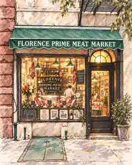

Our story · Greenwich Village
Cut to ordersince 1936
Florence opened at 5 Jones Street in 1936 and has been cutting meat to order on the same block ever since. You tell the butcher the cut, the thickness and the trim, and it is prepared while you wait.
In nearly ninety years the shop has had four owners. Each one learned the trade behind this counter before taking it over.
Some things are worth keeping exactly as they are.
1936Opened on Jones Street
4Owners, one shop
NewportOur signature steak

Shop hours
Sample hours, confirm before launch
Sample hours, confirm before launch
Open
At Florence
Come for the cut
A Florence original
The Newport Steak
Our house cut from the bottom sirloin, and how to cook it.
Learn moreOrder ahead
At the counter
Pick your cuts and thickness. Ready for pickup or local delivery.
Start an orderHoliday table
Thanksgiving
Fresh turkeys and rib roasts. Reserve by Friday, Nov 20.
Reserve nowFrom the counter
What regulars say
Placeholder for a real Google review about the Newport Steak.
Placeholder for a review about service and the butchers knowing your name.
Placeholder for a press quote, for example from a neighborhood paper.
For professional kitchens